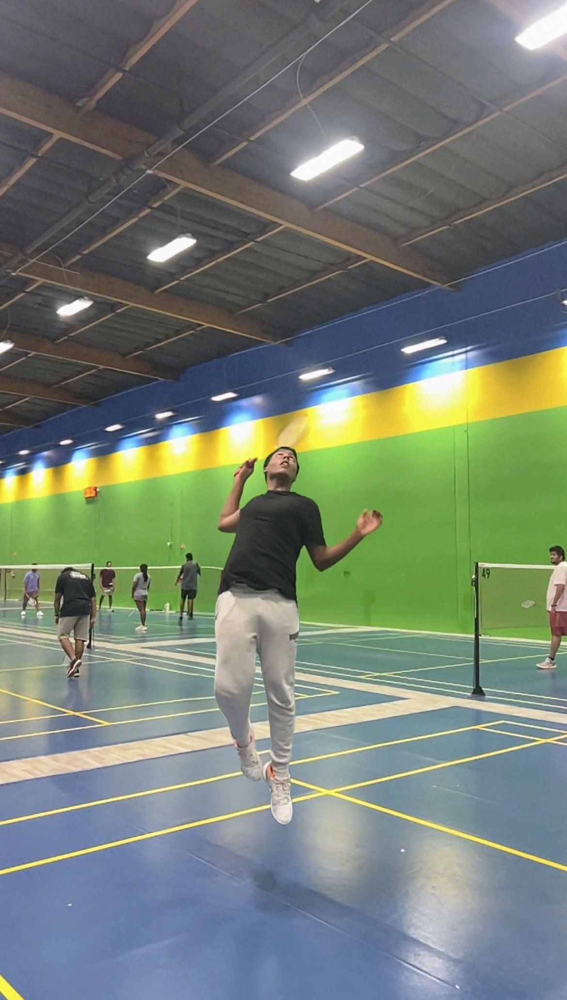
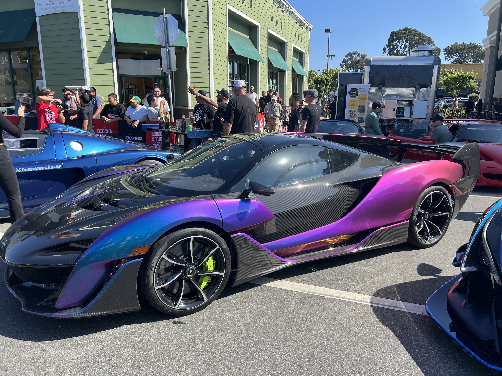

PROFILE_DATA

OPERATOR BIO
I’m a student at EVHS with a strong interest in computer science and engineering, and I plan to pursue CS at the collegiate level. I’m drawn to building things from the ground up, whether that’s systems, projects, or organizations, and I value understanding how things work rather than just using them.
I’m especially interested in problem-solving through logic, structure, and iteration. I tend to approach challenges methodically, focusing on efficiency, clarity, and long-term improvement. This mindset carries across both my technical work and leadership roles, where I prioritize responsibility, consistency, and follow-through.
This site documents my academic and creative work from the Fall 2025 semester, reflecting my growth in technical thinking, project execution, and presentation.
DATA_MODULES // HOBBIES

BADMINTON PROTOCOL
I am a competitive member of the Intermediate–Advanced Bingtang Badminton Team. Despite only playing for just over a year, I have rapidly developed my skills to match veteran players, participating in Junior Regional tournaments with a focus on aggressive growth and tactical precision.

TAE KWON DO
As a 2nd Dan Black Belt, my discipline is evidenced by 25+ Gold, 5 Silver, and 3 Bronze medals. I have sparred at state-level events and performed in South Korea with my studio's International Demonstration Team (organized by Kukkiwon). I now serve as a coach, passing on these values.

ROBOTICS ENGINEERING
Robotics provides the framework for my problem-solving mindset. I focus on the engineering lifecycle—building, experimenting, and refining mechanical systems. It is the physical application of the logic I use in coding and design.

AUTOMOTIVE DESIGN
My passion extends to automotive culture. I assisted in modifying a Mk4 Toyota Supra and regularly attend exhibitions. I had the honor of speaking at an Ohio showcase alongside owners of a rare Mercedes-AMG Black Series (~50 units) and a Chevrolet Corvette ZR1.